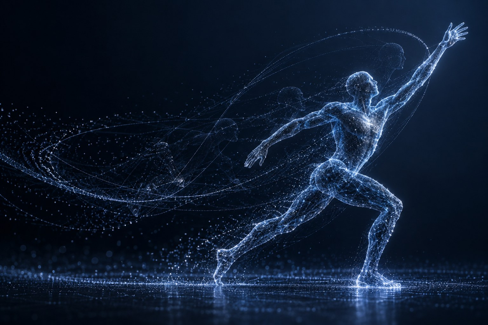

HUMAN MOTION
人体运动与身份理解
跨越视角、衣着与场景差异，从步态与多视角观测中理解人的身份、姿态和运动规律。
了解研究 ›
研究概念视觉我们关注机器如何从视觉中理解人、环境与交互。结合算法研究和真实实验，探索从运动表征、跨视角感知到世界预测的方法。
关注实验室的研究进展、学术交流与团队活动。
将多视角视觉、运动捕捉与力学测量结合，为人体运动与交互研究提供实验基础。
高精度运动轨迹采集。
多视角记录同一段运动。
观察地面反作用力。
推进平台联调与交互实验。
对视觉、人体运动或世界模型感兴趣？从一个问题、一篇论文、一次实验开始。